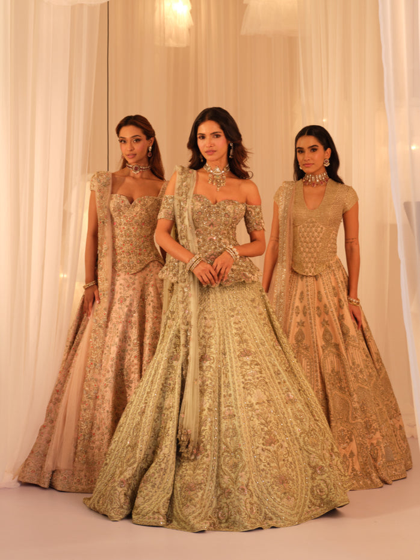
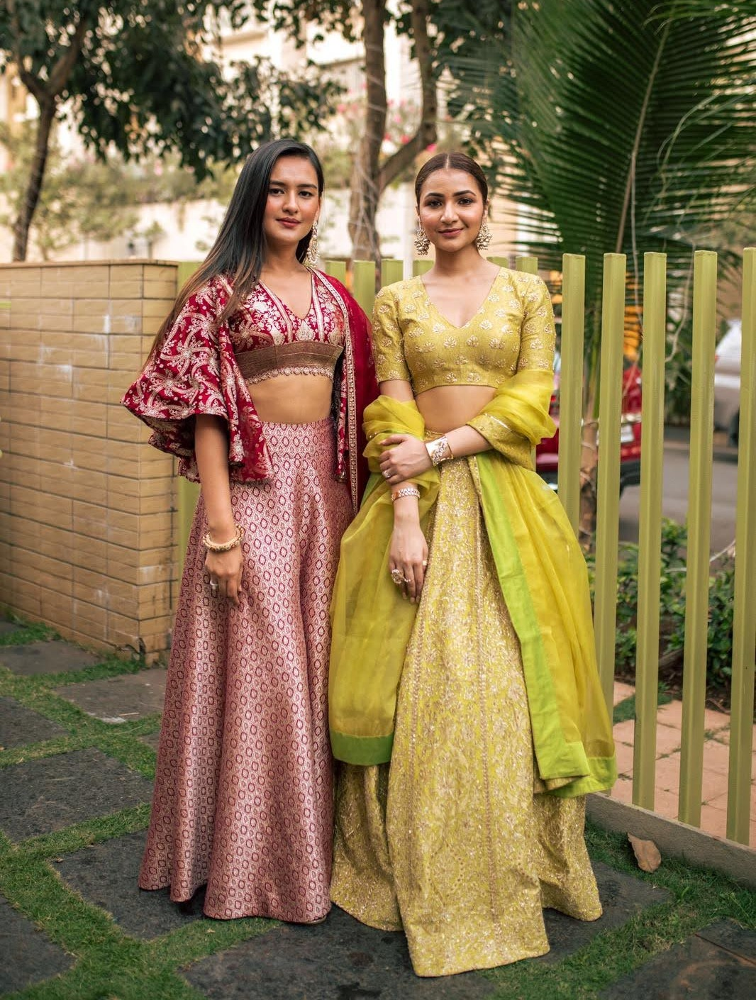
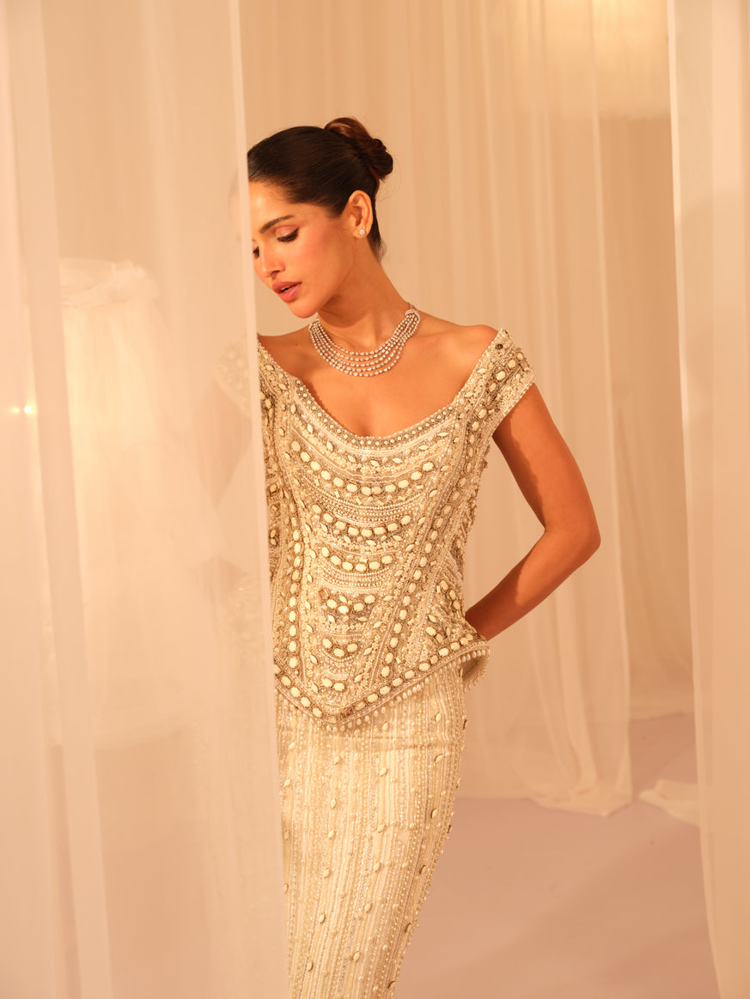
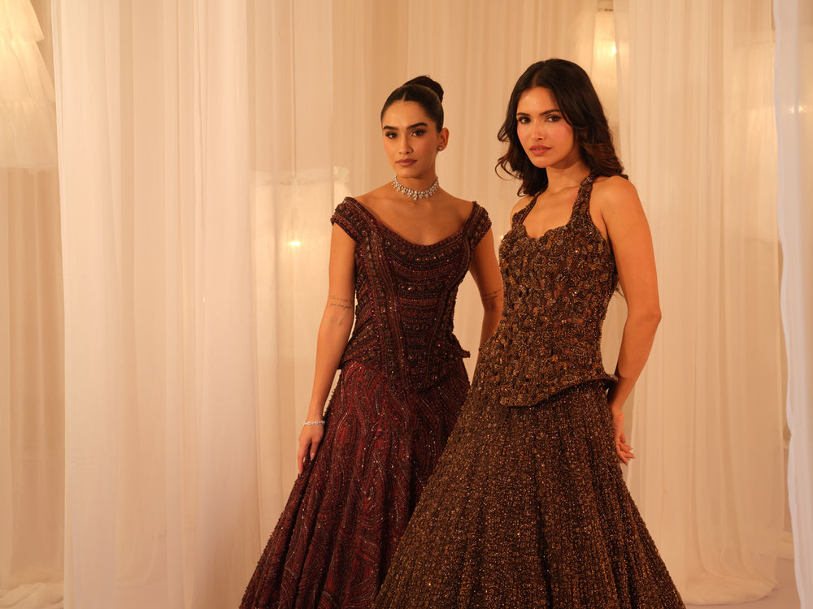
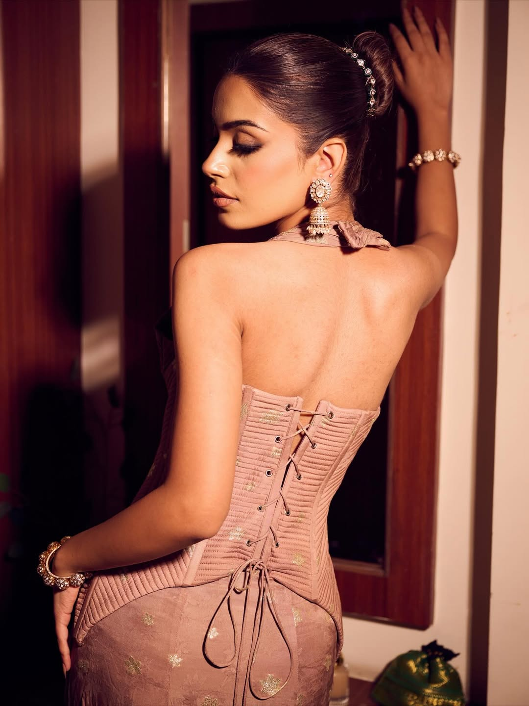

The House, Mumbai — Est. 2016
A friendship that became an atelier — built on the belief that every bride deserves a garment made with intention, not assumption.

Since the Beginning
K&A began the way most quiet houses do — between two people who saw the same picture before either said it aloud. Karishma and Ashita built this atelier on a simple conviction: that a bride's clothing should be made with intention, considered stitch by stitch, rather than assembled off a rack. What started as an instinct between friends is now a Mumbai atelier, where every lehenga, every corset, every draped silhouette begins as a private conversation — long before it becomes a garment.
"To design bridal wear that carries opulence and grace — a beauty considered enough that it does not date, in silhouettes a woman remembers long after the wedding ends."
The Vision — K&A by Karishma & Ashita
The Craft
Zardozi worked thread by thread. Sequins placed one at a time. Boning shaped and stitched until a corset holds a bride the way she wants to be held for twelve hours, not twelve minutes. Every K&A piece moves through the same hands, from first sketch to final fitting — because a garment this considered cannot be rushed, and should never be duplicated.
The same hands have, on occasion, dressed private clients across film and fashion — among them actress Palak Tiwari, styled in one of our hand-cut corset drape sarees.


Beyond the Atelier
K&A already lives beyond Mumbai — carried today by a small, considered circle of stores and platforms we're proud to stand alongside, in India and abroad. This footprint is never finished; we're always in conversation with new cities, new stores, new borders.
Online
And more, always expanding
In Store
And more, always expanding

Begin Here
One conversation — in our Mumbai atelier, or virtually, wherever you are — is where every K&A garment begins. Tell us about your day. We'll take it from there.